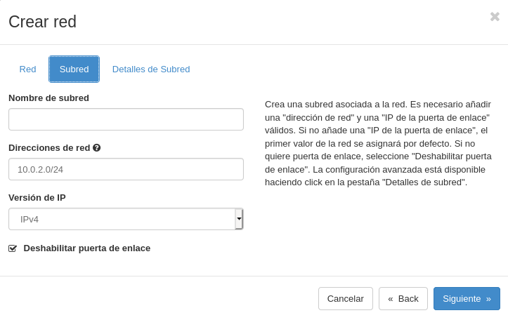
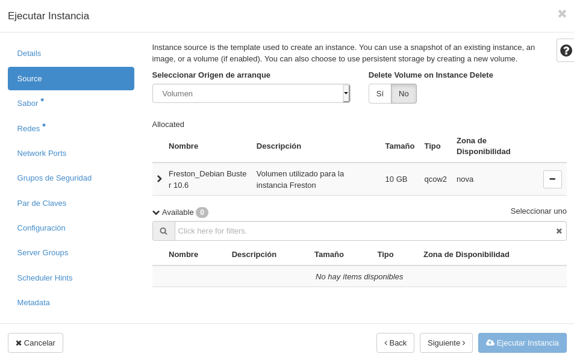

<!DOCTYPE html>
<html lang="es">

<head>
            <meta charset="utf-8">
        <meta http-equiv="X-UA-Compatible" content="IE=edge">
        <meta name="viewport" content="width=device-width, initial-scale=1">


        <title>Modificación del escenario de trabajo en OpenStack | Javier Pérez Hidalgo</title>

        <!-- Bootstrap Core CSS -->
        <link href="/theme/css/bootstrap.min.css" rel="stylesheet">

        <!-- Custom CSS -->
        <link href="/theme/css/clean-blog.min.css" rel="stylesheet">

        <!-- Code highlight color scheme -->
            <link href="/theme/css/code_blocks/darkly.css" rel="stylesheet">


        <!-- Custom Fonts -->
        <link href="https://maxcdn.bootstrapcdn.com/font-awesome/4.7.0/css/font-awesome.min.css" rel="stylesheet" type="text/css">
        <link href='https://fonts.googleapis.com/css?family=Lora:400,700,400italic,700italic' rel='stylesheet' type='text/css'>
        <link href='https://fonts.googleapis.com/css?family=Open+Sans:300italic,400italic,600italic,700italic,800italic,400,300,600,700,800' rel='stylesheet' type='text/css'>

        <!-- HTML5 Shim and Respond.js IE8 support of HTML5 elements and media queries -->
        <!-- WARNING: Respond.js doesn't work if you view the page via file:// -->
        <!--[if lt IE 9]>
            <script src="https://oss.maxcdn.com/libs/html5shiv/3.7.0/html5shiv.js"></script>
            <script src="https://oss.maxcdn.com/libs/respond.js/1.4.2/respond.min.js"></script>
        <![endif]-->


        <meta name="description" content="En este post voy a realizar modificaciones sobre un escenario de OpenStack que fue creado anteriormente y cuya explicación se encuentra...">

        <meta name="author" content="Javier Pérez Hidalgo">

        <meta name="tags" content="OpenStack">

	                <meta property="og:locale" content="">
		<meta property="og:site_name" content="Javier Pérez Hidalgo">

	<meta property="og:type" content="article">
            <meta property="article:author" content="/author/javier-perez-hidalgo.html">
	<meta property="og:url" content="/modificacion-del-escenario-de-trabajo-en-openstack.html">
	<meta property="og:title" content="Modificación del escenario de trabajo en OpenStack">
	<meta property="article:published_time" content="2020-12-12 00:00:00+01:00">
            <meta property="og:description" content="En este post voy a realizar modificaciones sobre un escenario de OpenStack que fue creado anteriormente y cuya explicación se encuentra...">

            <meta property="og:image" content="theme/images/banner-hlc.jpg">
</head>

<body class="article-modificacion-del-escenario-de-trabajo-en-openstack">

    <!-- Navigation -->
    <nav class="navbar navbar-default navbar-custom navbar-fixed-top">
        <div class="container-fluid">
            <!-- Brand and toggle get grouped for better mobile display -->
        <!--    <div class="navbar-header page-scroll">
                <button type="button" class="navbar-toggle" data-toggle="collapse" data-target="#bs-example-navbar-collapse-1">
                    <span class="sr-only">Toggle navigation</span>
                    <span class="icon-bar"></span>
                    <span class="icon-bar"></span>
                    <span class="icon-bar"></span>
                </button>-->
                <a class="navbar-brand" href="/">Inicio</a>
                <a class="navbar-brand" href="/categories">Categorías</a>
                <a class="navbar-brand" href="/authors">Sobre mí</a>

            </div>

            <!-- Collect the nav links, forms, and other content for toggling -->
            <div class="collapse navbar-collapse" id="bs-example-navbar-collapse-1">
                <ul class="nav navbar-nav navbar-right">

                </ul>
            </div>
            <!-- /.navbar-collapse -->
        </div>
        <!-- /.container -->
    </nav>

    <!-- Page Header -->
        <header class="intro-header" style="background-image: url('/theme/images/banner-hlc.jpg')">
        <div class="container">
            <div class="row">
                <div class="col-lg-8 col-lg-offset-2 col-md-10 col-md-offset-1">
                    <div class="post-heading">
                        <h1>Modificación del escenario de trabajo en OpenStack</h1>
                        <span class="meta">Publicado por
                                <a href="/author/javier-perez-hidalgo.html">Javier Pérez Hidalgo</a>
                             el sáb 12 diciembre 2020
                        </span>
                        
                    </div>
                </div>
            </div>
        </div>
    </header>

    <!-- Main Content -->
    <div class="container">
        <div class="row">
            <div class="col-lg-8 col-lg-offset-2 col-md-10 col-md-offset-1">
    <!-- Post Content -->
    <article>
        <p><strong>En este <em>post</em> voy a realizar modificaciones sobre un escenario de <em>OpenStack</em> que fue creado anteriormente y cuya explicación se encuentra en <a href="https://javierpzh.github.io/creacion-del-escenario-de-trabajo-en-openstack.html">este post</a>, por si quieres saber más al respecto.</strong></p>
<p><strong>Vamos a modificar el escenario que tenemos actualmente en OpenStack para que se adecúe a la realización de todas las prácticas en todos los módulos de 2º, en particular para que tenga una estructura más real a la de varios equipos detrás de un cortafuegos, separando los servidores en dos redes: red interna y DMZ. Para ello vamos a reutilizar todo lo hecho hasta ahora y añadiremos una máquina más: Frestón</strong></p>
<p></p>
<h4>1. Creación de la red DMZ:</h4>
<ul>
<li><strong>Nombre: DMZ de (nombre de usuario)</strong></li>
<li><strong>10.0.2.0/24</strong></li>
</ul>
<p>Vamos a crear una nueva red, en esta caso, una <strong>red DMZ</strong>, que se situará entre la red interna y la externa.</p>
<p>Para crearla, nos dirigimos a nuestro panel de administración de <em>OpenStack</em> y nos situamos en la sección de <strong>Redes</strong>. Una vez aquí, <em>clickamos</em> en el botón llamado <strong>+ Crear red</strong>, y se nos abrirá un menú, donde debemos indicar las características de la red que queremos crear:</p>
<p>En el primer apartado de este asistente, indicamos el nombre que poseerá nuestra nueva red:</p>
<p></p>
<p>En segundo lugar, indicamos las direcciones de red que abarcará, y deshabilitaremos la puerta de enlace ya que no nos va hacer falta debido a que vamos a poner a <em>Dulcinea</em> como <em>gateway</em>:</p>
<p></p>
<p>Por último, vamos a dejar marcada la opción de <strong>Habilitar DHCP</strong> que viene de manera predeterminada, para que de esta forma, nos dé una dirección IP de manera automática cuando conectemos una instancia.</p>
<p></p>
<p>Hecho esto, ya tendríamos nuestra red DMZ creada, como podemos observar:</p>
<p></p>
<p>Hemos finalizado este primer ejercicio.</p>
<h4>2. Creación de las instancias:</h4>
<ul>
<li>
<p><strong>Freston:</strong></p>
<ul>
<li><strong>Debian Buster sobre volumen de 10GB con sabor m1.mini</strong></li>
<li><strong>Conectada a la red interna</strong></li>
<li><strong>Accesible indirectamente a través de dulcinea</strong></li>
<li><strong>IP estática</strong></li>
</ul>
</li>
</ul>
<p>Antes de crear la propia instancia en sí, vamos a crear el volumen sobre el que posteriormente generaremos la instancia <strong>Freston</strong>. Para ello he creado un volumen con estas preferencias:</p>
<p></p>
<p>Una vez ha terminado el proceso de creación del nuevo volumen, obtenemos como resultado:</p>
<p></p>
<p>Y ahora, un detalle importante que hay que tener en cuenta antes de realizar el lanzamiento de la nueva instancia es, que si recordamos, a la <strong>red interna</strong>, le deshabilitamos el <strong>servidor DHCP</strong>, por lo que si ahora generamos esta nueva instancia perteneciente a esta red, no adquirirá ninguna dirección mediante <em>DHCP</em>, por lo que será inaccesible, porque recordemos que a esta máquina también se accederá a través de <em>Dulcinea</em>. Por tanto, vamos a habilitar el servidor <em>DHCP</em> de la red interna.</p>
<p>Ahora sí, es momento de crear la nueva instancia.</p>
<p>Para crearla, nos dirigimos hacia nuestro panel de administración de <em>OpenStack</em> y nos situamos en la sección de <strong>Instancias</strong>. Una vez aquí, <em>clickamos</em> en el botón llamado <strong>+ Lanzar instancia</strong>, y se nos abrirá un menú, donde debemos indicar las características de la instancia que queremos crear:</p>
<p>En el primer apartado de este asistente, indicamos el nombre que poseerá nuestra nueva instancia:</p>
<p></p>
<p>Ahora establecemos que el origen de arranque sea el volumen creado previamente:</p>
<p></p>
<p>Como <strong>Sabor</strong> indicamos que tenga un <strong>m1.mini</strong>.</p>
<p></p>
<p>Y por último, le asignamos la red a la que va a pertenecer esta máquina.</p>
<p></p>
<p>Aquí podemos ver como hemos creado esta instancia correctamente y que pertenece a la red interna, ya que posee una dirección <strong>10.0.1.6</strong></p>
<p></p>
<p>Vamos a probar a acceder a <strong>Freston</strong> a través de <em>Dulcinea</em>:</p>
<pre>
debian@dulcinea:~$ ssh debian@10.0.1.6
The authenticity of host '10.0.1.6 (10.0.1.6)' can't be established.
ECDSA key fingerprint is SHA256:uR1IwMruxlhVJzsAB7UuqHlyR7r+6xqyVhwFXxvX6PM.
Are you sure you want to continue connecting (yes/no)? yes
Warning: Permanently added '10.0.1.6' (ECDSA) to the list of known hosts.
Linux freston 4.19.0-11-cloud-amd64 #1 SMP Debian 4.19.146-1 (2020-09-17) x86_64

The programs included with the Debian GNU/Linux system are free software;
the exact distribution terms for each program are described in the
individual files in /usr/share/doc/*/copyright.

Debian GNU/Linux comes with ABSOLUTELY NO WARRANTY, to the extent
permitted by applicable law.

debian@freston:~$ ip a
1: lo: <LOOPBACK,UP,LOWER_UP> mtu 65536 qdisc noqueue state UNKNOWN group default qlen 1000
    link/loopback 00:00:00:00:00:00 brd 00:00:00:00:00:00
    inet 127.0.0.1/8 scope host lo
       valid_lft forever preferred_lft forever
    inet6 ::1/128 scope host
       valid_lft forever preferred_lft forever
2: eth0: <BROADCAST,MULTICAST,UP,LOWER_UP> mtu 8950 qdisc pfifo_fast state UP group default qlen 1000
    link/ether fa:16:3e:4a:d0:53 brd ff:ff:ff:ff:ff:ff
    inet 10.0.1.6/24 brd 10.0.1.255 scope global dynamic eth0
       valid_lft 86277sec preferred_lft 86277sec
    inet6 fe80::f816:3eff:fe4a:d053/64 scope link
       valid_lft forever preferred_lft forever
debian@freston:~$
</pre>

<p>Vemos como efectivamente hemos accedido a <strong>Freston</strong>.</p>
<p>Es el momento de realizar las configuraciones necesarias en esta nueva máquina.</p>
<p>En primer lugar vamos a asignarle una <strong>dirección IP estática</strong>. Para ello editamos el fichero <code>/etc/network/interfaces</code>:</p>
<pre>
nano /etc/network/interfaces
</pre>

<p>En él, establecemos un bloque como este, en el que indicamos que la interfaz <strong>eth0</strong> (la que está conectada a la red interna), posea una dirección IP estática, cuya dirección es la <strong>10.0.1.6</strong>, cuya máscara de red es una 255.255.255.0, es decir, una <strong>/24</strong>, que la puerta de enlace es la <strong>10.0.1.11</strong>, es decir, la IP de <em>Dulcinea</em>, y que utilice esos DNS indicados.</p>
<pre>
allow-hotplug eth0
iface eth0 inet static
address 10.0.1.6
netmask 255.255.255.0
gateway 10.0.1.11
</pre>

<p>Reiniciamos y aplicamos los cambios en las interfaces de red:</p>
<pre>
systemctl restart networking
</pre>

<p>Vamos a ver si se ha aplicado correctamente la configuración deseada:</p>
<pre>
debian@freston:~$ ip a
1: lo: <LOOPBACK,UP,LOWER_UP> mtu 65536 qdisc noqueue state UNKNOWN group default qlen 1000
    link/loopback 00:00:00:00:00:00 brd 00:00:00:00:00:00
    inet 127.0.0.1/8 scope host lo
       valid_lft forever preferred_lft forever
    inet6 ::1/128 scope host
       valid_lft forever preferred_lft forever
2: eth0: <BROADCAST,MULTICAST,UP,LOWER_UP> mtu 8950 qdisc pfifo_fast state UP group default qlen 1000
    link/ether fa:16:3e:4a:d0:53 brd ff:ff:ff:ff:ff:ff
    inet 10.0.1.6/24 brd 10.0.1.255 scope global eth0
       valid_lft forever preferred_lft forever
    inet6 fe80::f816:3eff:fe4a:d053/64 scope link
       valid_lft forever preferred_lft forever

debian@freston:~$ ip r
default via 10.0.1.11 dev eth0 onlink
10.0.1.0/24 dev eth0 proto kernel scope link src 10.0.1.6
169.254.169.254 via 10.0.1.1 dev eth0

debian@freston:~$ ping 10.0.0.1
PING 10.0.0.1 (10.0.0.1) 56(84) bytes of data.
64 bytes from 10.0.0.1: icmp_seq=1 ttl=63 time=1.63 ms
64 bytes from 10.0.0.1: icmp_seq=2 ttl=63 time=1.60 ms
64 bytes from 10.0.0.1: icmp_seq=3 ttl=63 time=1.50 ms
^C
--- 10.0.0.1 ping statistics ---
3 packets transmitted, 3 received, 0% packet loss, time 6ms
rtt min/avg/max/mdev = 1.499/1.575/1.628/0.071 ms

debian@freston:~$ ping 8.8.8.8
PING 8.8.8.8 (8.8.8.8) 56(84) bytes of data.
64 bytes from 8.8.8.8: icmp_seq=1 ttl=111 time=43.3 ms
64 bytes from 8.8.8.8: icmp_seq=2 ttl=111 time=42.8 ms
64 bytes from 8.8.8.8: icmp_seq=3 ttl=111 time=43.8 ms
^C
--- 8.8.8.8 ping statistics ---
3 packets transmitted, 3 received, 0% packet loss, time 5ms
rtt min/avg/max/mdev = 42.825/43.297/43.751/0.448 ms

debian@freston:~$ ping www.google.es
ping: www.google.es: Temporary failure in name resolution
</pre>

<p>Podemos observar como todos los cambios se han aplicado, como además ya poseemos conexión a internet, pero aún no podemos hacer uso de la resolución de nombres.</p>
<p>Esto se debe a que, esta instancia, posee un fichero <code>/etc/resolv.conf</code> que se genera de manera dinámica, por lo que debemos buscar alguna forma de indicarle a ese fichero que utilice los servidores DNS de los que queremos hacer uso.</p>
<p>Para hacer esto, tendemos que modificar el fichero <code>/etc/resolvconf/resolv.conf.d/base</code> e indicar ahí las direcciones de los servidores DNS, y así incluirá a estos en cada arranque/reinicio.</p>
<pre>
nano /etc/resolvconf/resolv.conf.d/base
</pre>

<p>En mi caso, he añadido el <strong>10.0.1.11</strong>, es decir, <em>Dulcinea</em>, y el <strong>8.8.8.8</strong>, que pertenece a <em>Google</em>, por lo que el fichero quedaría así:</p>
<pre>
nameserver 10.0.1.11
nameserver 8.8.8.8
</pre>

<p>Reiniciamos de nuevo y aplicamos los cambios:</p>
<pre>
systemctl restart networking
</pre>

<p>Y volvemos a intentar hacer uso de la resolución de nombres:</p>
<pre>
debian@freston:~$ ping www.google.es
PING www.google.es (216.58.211.35) 56(84) bytes of data.
64 bytes from muc03s14-in-f3.1e100.net (216.58.211.35): icmp_seq=1 ttl=112 time=128 ms
64 bytes from muc03s14-in-f3.1e100.net (216.58.211.35): icmp_seq=2 ttl=112 time=52.9 ms
64 bytes from muc03s14-in-f3.1e100.net (216.58.211.35): icmp_seq=3 ttl=112 time=45.6 ms
^C
--- www.google.es ping statistics ---
3 packets transmitted, 3 received, 0% packet loss, time 5ms
rtt min/avg/max/mdev = 45.578/75.632/128.400/37.432 ms
</pre>

<p>Ahora sí resuelve por nombres, por lo que ya habríamos terminado las configuraciones de red.</p>
<p>Vamos a pasar ahora a configurar la resolución estática, para ello editamos el fichero <code>/etc/hosts</code>:</p>
<pre>
nano /etc/hosts
</pre>

<p>La resolución estática lo que hace, es que cuando intentemos resolver un nombre, busca en este fichero si tiene su dirección IP guardada, por lo que nos facilita y nos acomoda mucho el trabajo.</p>
<p>Añadimos estas líneas:</p>
<pre>
127.0.1.1 freston.javierpzh.gonzalonazareno.org freston freston.novalocal
127.0.0.1 localhost

10.0.1.11 dulcinea.javierpzh.gonzalonazareno.org dulcinea
10.0.1.8 sancho.javierpzh.gonzalonazareno.org sancho
10.0.1.13 quijote.javierpzh.gonzalonazareno.org quijote
</pre>

<p>Me he dado cuenta de una cosa al reiniciar la máquina <em>Freston</em>, y es que en cada inicio se restablece el fichero <code>/etc/hosts</code>. Para cambiar este funcionamiento, tenemos que dirigirnos al fichero <code>/etc/cloud/cloud.cfg</code> y buscar esta línea:</p>
<pre>
manage_etc_hosts: true
</pre>

<p>Le cambiamos el valor a <em>false</em>:</p>
<pre>
manage_etc_hosts: false
</pre>

<p>Y ya habríamos configurado la resolución estática en <em>Freston</em>.</p>
<p>También he añadido la línea correspondiente a las máquinas <em>Dulcinea</em>, <em>Sancho</em> y <em>Quijote</em>, para que ellas también puedan hacer uso de la resolución estática con <em>Freston</em>. Les he añadido esta línea:</p>
<pre>
10.0.1.6 freston.javierpzh.gonzalonazareno.org freston
</pre>

<p>Por último, vamos a configurar nuestro reloj utilizando un servidor <strong>NTP</strong> externo, pero nos encontraremos con que tendremos conflictos entre los servicios <code>systemd-timesyncd</code> y <code>ntpd</code>. En mi caso voy a desinstalar el paquete <code>ntp</code> para solucionar el problema:</p>
<pre>
apt remove --purge ntp -y
</pre>

<p>Hecho esto, introducimos el siguiente comando y seleccionamos la configuración que nos interese:</p>
<pre>
dpkg-reconfigure tzdata
</pre>

<p>Comprobamos que tenemos la hora correcta y el servidor <strong>NTP</strong> activo y sincronizado:</p>
<pre>
root@freston:~# timedatectl
               Local time: Sat 2020-12-12 23:36:24 CET
           Universal time: Sat 2020-12-12 22:36:24 UTC
                 RTC time: Sat 2020-12-12 22:36:25
                Time zone: Europe/Madrid (CET, +0100)
System clock synchronized: yes
              NTP service: active
          RTC in local TZ: no
</pre>

<p>Ahora sí, hemos terminado todas las configuraciones en <em>Freston</em>.</p>
<p>Aunque antes de salir de esta máquina, aún me quedaría algo por hacer, y no es más que llevar a cabo la creación del usuario <strong>profesor</strong>, usuario que puede utilizar <code>sudo</code> sin contraseña.</p>
<p>Para crear un usuario en <em>Debian</em>, tenemos que hacer uso del comando <code>useradd</code>, pero bien, si queremos que en el nuevo usuario se creen las carpetas automáticamente en el directorio <code>/home</code> debemos introducir la opción <code>-m</code>:</p>
<pre>
root@freston:~# useradd profesor -m -s /bin/bash

root@freston:~# passwd profesor
New password:
Retype new password:
passwd: password updated successfully

root@freston:~# ls /home/
debian  profesor
</pre>

<p>También le he asignando una contraseña que es <strong>profesor</strong>, por si alguna vez nos es necesaria, aunque normalmente no nos hará falta ya que accederemos mediante claves públicas-privadas.</p>
<p>He copiado todas las claves públicas de los profesores al fichero <code>.ssh/authorized_keys</code> del usuario <em>profesor</em>.</p>
<pre>
mkdir .ssh

nano .ssh/authorized_keys

chmod 700 .ssh/

chmod 600 .ssh/authorized_keys
</pre>

<p><strong>Importante:</strong> hay que cambiar los permisos de la carpeta <code>.ssh</code> a <em>700</em>, y del fichero <code>authorized_keys</code> a <em>600</em>.</p>
<h4>3. Modificación de la ubicación de quijote</h4>
<ul>
<li><strong>Pasa de la red interna a la DMZ y su direccionamiento tiene que modificarse apropiadamente</strong></li>
</ul>
<p>Es hora de realizar el último cambio del ejercicio, y no es más que cambiar la ubicación de la máquina <strong>Quijote</strong> a la nueva <strong>red DMZ</strong>, ya que actualmente pertenece a la red interna.</p>
<p>Para llevar a cabo esta modificación, nos dirigimos a nuestro panel de administración de <em>OpenStack</em> y nos situamos en la sección de <strong>Instancias</strong>. Una vez aquí, <em>clickamos</em> en la pequeña flecha del final, y se nos desplegará este menú de opciones, donde debemos seleccionar <strong>Desconectar interfaz</strong>:</p>
<p></p>
<p>Seleccionamos la interfaz a desconectar, en este caso la interfaz conectada a la red interna:</p>
<p></p>
<p>Y una vez hecho esto, en el mismo menú de opciones, debemos seleccionar <strong>Conectar interfaz</strong>,  y seleccionar la <strong>red DMZ</strong>. Vemos como ahora <em>Quijote</em>, posee una dirección IP <strong>10.0.2.6</strong>.</p>
<p></p>
<p>Recordemos, que a las instancias <em>Sancho</em>, <em>Quijote</em> y <em>Freston</em>, accedemos mediante <em>Dulcinea</em>, por lo que, si queremos acceder a <em>Quijote</em>, debe tener conexión con <em>Dulcinea</em>, y esto solo es posible si añadimos una nueva interfaz a <em>Dulcinea</em> para que también pertenezca a la <strong>red DMZ</strong>, por lo que también la vamos a añadir.</p>
<p>Aquí podemos ver el resultado:</p>
<p></p>
<p>Vamos a comprobar que realmente podemos acceder a <em>Quijote</em> a través de <em>Dulcinea</em>:</p>
<pre>
debian@dulcinea:~$ ssh centos@10.0.2.6
The authenticity of host '10.0.2.6 (10.0.2.6)' can't be established.
ECDSA key fingerprint is SHA256:E66o30JGSL5dZglKXltZaOAzuVHOWZUqdopacdi72m8.
Are you sure you want to continue connecting (yes/no)? yes
Warning: Permanently added '10.0.2.6' (ECDSA) to the list of known hosts.
Last login: Sat Dec 12 23:33:20 2020 from 10.0.1.11

[centos@quijote ~]$
</pre>

<p>Efectivamente la respuesta es positiva.</p>
<p>Por último, vamos a establecer estas nuevas direcciones que han obtenido <em>Dulcinea</em> y <em>Quijote</em> como estáticas.</p>
<p>En el caso de <strong>Dulcinea</strong>:</p>
<pre>
debian@dulcinea:~# ip a

...

4: eth2: <BROADCAST,MULTICAST,UP,LOWER_UP> mtu 8950 qdisc pfifo_fast state UP group default qlen 1000
    link/ether fa:16:3e:8d:98:da brd ff:ff:ff:ff:ff:ff
    inet 10.0.2.10/24 brd 10.0.2.255 scope global dynamic eth2
       valid_lft 85985sec preferred_lft 85985sec
    inet6 fe80::f816:3eff:fe8d:98da/64 scope link
       valid_lft forever preferred_lft forever
</pre>

<p>Vemos que ha obtenido por <em>DHCP</em> la dirección <strong>10.0.2.10</strong> en la interfaz <strong>eth2</strong>, por lo tanto esta le vamos a asignar de manera estática.</p>
<p>Editamos el fichero <code>/etc/network/interfaces</code>:</p>
<pre>
nano /etc/network/interfaces
</pre>

<p>Quedaría de tal forma el bloque de la interfaz <em>eth2</em>:</p>
<pre>
allow-hotplug eth2
iface eth2 inet static
address 10.0.2.10
netmask 255.255.255.0
</pre>

<p>Reiniciamos y aplicamos los cambios en las interfaces de red:</p>
<pre>
systemctl restart networking
</pre>

<p>Vamos a comprobar las direcciones:</p>
<pre>
root@dulcinea:~# ip a

...

4: eth2: <BROADCAST,MULTICAST> mtu 8950 qdisc pfifo_fast state DOWN group default qlen 1000
    link/ether fa:16:3e:8d:98:da brd ff:ff:ff:ff:ff:ff
</pre>

<p>Anda, la interfaz <em>eth2</em>, se encuentra en estado <strong>DOWN</strong>, es decir, apagada. Por defecto esta interfaz no se va a levantar en cada arranque, por lo que tendríamos que hacer uso del comando <code>ifup eth2</code> cada vez que quisiéramos hacer uso de esta interfaz. Esto no es lo que estamos buscando, por tanto, vamos a encontrar una solución.</p>
<p>Vamos a editar el fichero <code>/etc/network/interfaces.d/*</code>:</p>
<pre>
nano /etc/network/interfaces.d/*
</pre>

<p>En él nos vamos a encontrar:</p>
<pre>
auto lo
iface lo inet loopback
    dns-nameservers 192.168.202.2

auto eth0
iface eth0 inet dhcp
    mtu 8950

auto eth1
iface eth1 inet dhcp
    mtu 8950
</pre>

<p>Vemos como no apreciamos ninguna referencia sobre la interfaz <em>eth2</em>, por lo que vamos a añadir este bloque:</p>
<pre>
auto eth2
iface eth2 inet dhcp
    mtu 8950
</pre>

<p>En este punto, reiniciamos de nuevo:</p>
<pre>
systemctl restart networking
</pre>

<p>Y comprobamos de nuevo las direcciones:</p>
<pre>
root@dulcinea:~# ip a

...

4: eth2: <BROADCAST,MULTICAST,UP,LOWER_UP> mtu 8950 qdisc pfifo_fast state UP group default qlen 1000
    link/ether fa:16:3e:8d:98:da brd ff:ff:ff:ff:ff:ff
    inet 10.0.2.10/24 brd 10.0.2.255 scope global eth2
       valid_lft forever preferred_lft forever
    inet6 fe80::f816:3eff:fe8d:98da/64 scope link
       valid_lft forever preferred_lft forever
</pre>

<p>Ahora sí nos encontramos con la interfaz en estado <strong>UP</strong> y con la configuración correcta.</p>
<p>Recordemos que <em>Dulcinea</em> es la máquina que hace de <em>router</em>, por lo que todas las conexiones pasan por ella, y es la que se encarga de redirigir las peticiones.</p>
<p>En el primer <a href="https://javierpzh.github.io/creacion-del-escenario-de-trabajo-en-openstack.html">post</a>, configuramos una regla de <em>iptables</em> para que recondujera las peticiones provenientes de la red <em>10.0.1.0/24</em> hacia la interfaz <strong>eth0</strong> que es mediante la que está conectada al exterior. Pero esta regla obviamente no nos sirve para que <em>Quijote</em> que ahora pertenece a la red <em>10.0.2.0/24</em>, posea conexción a internet, por lo que tenemos que crear una nueva regla para esta red:</p>
<pre>
iptables -t nat -A POSTROUTING -s 10.0.2.0/24 -o eth0 -j MASQUERADE
</pre>

<p><strong>Importante:</strong> es muy recomendable instalar el paquete <code>iptables-persistent</code>, ya que esto hará que en cada arranque del sistema las reglas que hemos configurado se levanten automáticamente, siempre y cuando las guardemos en el fichero <code>/etc/iptables/rules.v4</code>. Por tanto vamos a guardar esta regla para que se levente en cada inicio:</p>
<pre>
iptables-save > /etc/iptables/rules.v4
</pre>

<p>Lógicamente tenemos habilitado el <strong>bit de forward</strong>, ya que en el primer <em>post</em> lo establecimos a <em>1</em> de manera permanente.</p>
<p>Para terminar de trabajar en <em>Dulcinea</em>, vamos a corregir la resolución estática de nombres, ya que la IP de <em>Quijote</em> ha cambiado. En el fichero <code>/etc/hosts</code> sustituimos la antigua línea que hacía referencia a <em>Quijote</em> por esta:</p>
<pre>
10.0.2.6 quijote.javierpzh.gonzalonazareno.org quijote
</pre>

<p>En este punto, vamos a pasar a la máquina <strong>Quijote</strong>:</p>
<pre>
[centos@quijote ~]$ ip a
1: lo: <LOOPBACK,UP,LOWER_UP> mtu 65536 qdisc noqueue state UNKNOWN group default qlen 1000
    link/loopback 00:00:00:00:00:00 brd 00:00:00:00:00:00
    inet 127.0.0.1/8 scope host lo
       valid_lft forever preferred_lft forever
    inet6 ::1/128 scope host
       valid_lft forever preferred_lft forever
3: eth0: <BROADCAST,MULTICAST,UP,LOWER_UP> mtu 8950 qdisc fq_codel state UP group default qlen 1000
    link/ether fa:16:3e:b6:48:45 brd ff:ff:ff:ff:ff:ff
    inet 10.0.2.6/24 brd 10.0.2.255 scope global dynamic noprefixroute eth0
       valid_lft 84200sec preferred_lft 84200sec
    inet6 fe80::275d:a225:a9a0:a43f/64 scope link noprefixroute
       valid_lft forever preferred_lft forever
</pre>

<p>Para establecer el direccionamiento estático en <em>CentOS 8</em>, debemos editar el fichero <code>/etc/sysconfig/network-scripts/ifcfg-eth0</code>:</p>
<pre>
nano /etc/sysconfig/network-scripts/ifcfg-eth0
</pre>

<p>En él, vamos a sustituir el bloque existente por este, en el que indicamos que la IP estática que le estamos asignando es la <strong>10.0.2.6</strong>, cuya máscara de red es una <strong>255.255.255.0</strong>, que la puerta de enlace es la <strong>10.0.2.10</strong>, es decir, la IP de <em>Dulcinea</em> en esta red, y que utilice esos <strong>DNS</strong> indicados. Parece que ya hemos terminado toda la configuración necesaria pero no, ya que si nos fijamos bien, la <strong>dirección de hardware</strong> de la interfaz, ha cambiado también, por lo que también debemos modificar el valor del apartado <strong>HWADDR</strong> por el nuevo valor <em>fa:16:3e:b6:48:45</em>. Es importante establecer en el apartado <strong>ONBOOT</strong> el valor <em>yes</em>, ya que esto hará que esta configuración se active en cada inicio del sistema.</p>
<pre>
BOOTPROTO=static
DEVICE=eth0
MTU=8950
HWADDR=fa:16:3e:b6:48:45
ONBOOT=yes
TYPE=Ethernet
USERCTL=no
IPADDR=10.0.2.6
NETMASK=255.255.255.0
GATEWAY=10.0.2.10
DNS1=10.0.2.10
DNS2=8.8.8.8
</pre>

<p>Reiniciamos y aplicamos los cambios en las interfaces de red:</p>
<pre>
systemctl restart network.service
</pre>

<p>Vamos a comprobar las direcciones:</p>
<pre>
[root@quijote ~]# ip a

...

2: eth0: <BROADCAST,MULTICAST,UP,LOWER_UP> mtu 8950 qdisc fq_codel state UP group default qlen 1000
    link/ether fa:16:3e:b6:48:45 brd ff:ff:ff:ff:ff:ff
    inet 10.0.2.6/24 brd 10.0.2.255 scope global noprefixroute eth0
       valid_lft forever preferred_lft forever
    inet6 fe80::f816:3eff:feb6:4845/64 scope link
       valid_lft forever preferred_lft forever
</pre>

<p>Nos encontramos la interfaz con la configuración correcta.</p>
<p>Para terminar la tarea, vamos a modificar el fichero <code>/etc/hosts</code> de esta máquina <em>Quijote</em> para corregir la resolución estática de <em>Dulcinea</em> que ahora ha cambiado de IP para esta red. Sustituimos la antigua línea que hacía referencia a <em>Dulcinea</em> por esta:</p>
<pre>
10.0.2.10 dulcinea.javierpzh.gonzalonazareno.org dulcinea
</pre>

<p>Con esto, habríamos terminado todo el proceso de modificaciones.</p>
<p>Antes de finalizar el <em>post</em>, me gustaría aclarar que aunque no haya comentado nada de cambiar los ficheros <code>/etc/hosts</code> de las máquinas <em>Sancho</em> y <em>Freston</em>, si queremos seguir utilizando la resolución estática en estas máquinas a la hora de hacer referencia a <em>Quijote</em>, debemos modificar la línea que hace referencia a <em>Quijote</em>, por esta otra:</p>
<pre>
10.0.2.6 quijote.javierpzh.gonzalonazareno.org quijote
</pre>

<p>Y a lo mejor alguien se pregunta, como se conectarían estas máquinas con <em>Quijote</em> si no se encuentran en la misma red, pues bien, al estar todas conectadas a <em>Dulcinea</em>, realizan una conexión hacia esta, y la propia <em>Dulcinea</em> las hace conectar con <em>Quijote</em>. El mismo proceso se llevaría a cabo en el caso de que fuese <em>Quijote</em> el que quisiese conectar con <em>Sancho</em> o <em>Freston</em>.</p>
    </article>

        <div class="tags">
            <p><strong><a href="/tags">tags:</a></strong> <a href="/tag/openstack.html">OpenStack</a></p>
        </div>

    <hr>

            </div>
        </div>
    </div>

    <hr>

    <!-- Footer -->
    <footer>
        <div class="container">
            <div class="row">
                <div class="col-lg-8 col-lg-offset-2 col-md-10 col-md-offset-1">
                    <ul class="list-inline text-center">
                            <li>
                                <a href="https://www.instagram.com/javierpzh/">
                                    <span class="fa-stack fa-lg">
                                        <i class="fa fa-circle fa-stack-2x"></i>
                                        <i class="fa fa-instagram fa-stack-1x fa-inverse"></i>
                                    </span>
                                </a>
                            </li>
                            <li>
                                <a href="https://twitter.com/jperezhid_">
                                    <span class="fa-stack fa-lg">
                                        <i class="fa fa-circle fa-stack-2x"></i>
                                        <i class="fa fa-twitter fa-stack-1x fa-inverse"></i>
                                    </span>
                                </a>
                            </li>
                            <li>
                                <a href="https://github.com/javierpzh">
                                    <span class="fa-stack fa-lg">
                                        <i class="fa fa-circle fa-stack-2x"></i>
                                        <i class="fa fa-github fa-stack-1x fa-inverse"></i>
                                    </span>
                                </a>
                            </li>
                            <li>
                                <a href="https://www.facebook.com/javier.perezhidalgo.904">
                                    <span class="fa-stack fa-lg">
                                        <i class="fa fa-circle fa-stack-2x"></i>
                                        <i class="fa fa-facebook fa-stack-1x fa-inverse"></i>
                                    </span>
                                </a>
                            </li>
                            <li>
                                <a href="mailto:javierperezhidalgo01@gmail.com">
                                    <span class="fa-stack fa-lg">
                                        <i class="fa fa-circle fa-stack-2x"></i>
                                        <i class="fa fa-envelope-square fa-stack-1x fa-inverse"></i>
                                    </span>
                                </a>
                            </li>
                    </ul>
<p class="copyright text-muted">
    Blog creado por <a href="http://www.instagram.com/javierpzh/">Javier Pérez Hidalgo</a>,
    con la utilización de <a href="https://blog.getpelican.com/">Pelican</a>. <br />        &copy;  Javier Pérez Hidalgo
</p>                </div>
            </div>
        </div>
    </footer>

    <!-- jQuery -->
    <script src="/theme/js/jquery.min.js"></script>

    <!-- Bootstrap Core JavaScript -->
    <script src="/theme/js/bootstrap.min.js"></script>

        <!-- Custom Theme JavaScript -->
        <script src="/theme/js/clean-blog.min.js"></script>

</body>

</html>